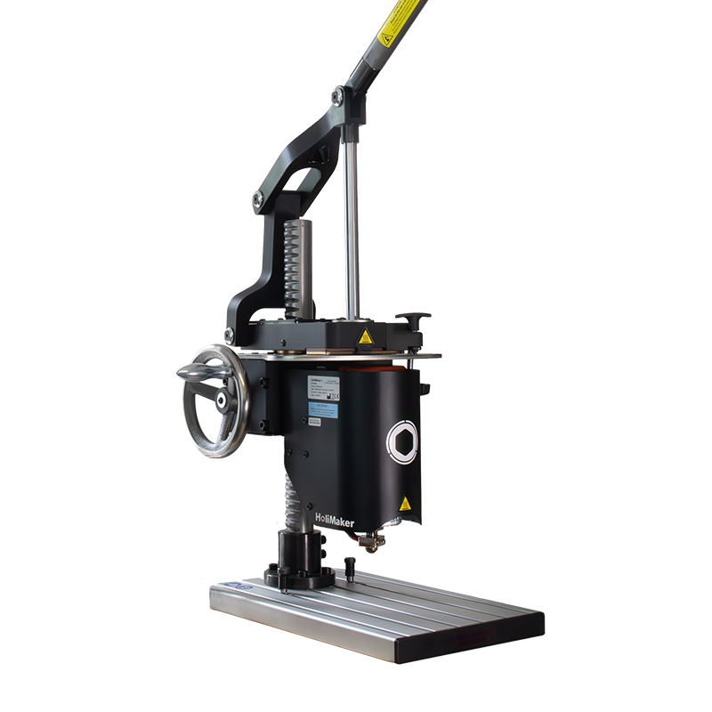

Standard Operating Procedure (SOP) for the HoliPress 38 manual plastic injection molding machine

1. Purpose
To safely and efficiently operate the HoliPress 38 for manual plastic injection molding to produce high-quality plastic parts, prototypes, or small batch productions.
2. Scope
Applicable to all operators using the HoliPress 38 for prototyping, material testing, recycling, and small-scale production in workshops, labs, or educational settings.
3. Safety Precautions
- Always wear provided personal protective equipment (PPE): safety glasses and thermal gloves.
- Ensure the machine is placed on a stable, flat surface.
- Keep hands and loose clothing away from moving parts during operation.
- Allow the machine to cool down before maintenance or cleaning.
4. Machine Description
- Injection volume capacity: 38 \({\rm cm^3}\).
- Triple heating zones for precise temperature control up to 320 °C.
- Length-adjustable injection lever for ergonomic operation.
- Adjustable mold height up to 190 mm.
- PID temperature control for consistent melting.
- Manual clamping vice compatible with various mold types (metal, SLA, FDM).
- Injection speed adjustable between 2 to 10 seconds.
- Power consumption: 860 W at 220 V.
5. Preparation
- Inspect the machine and all accessories for damage or wear.
- Select and install the appropriate mold in the clamping vice; secure firmly.
- Adjust the mold height as needed for your specific mold.
- Install the shut-off nozzle (5 mm heated nozzle included).
- Preheat the machine using the triple heating zones:
- Set each temperature zone according to the plastic material specifications (consult material datasheets).
- Allow the machine to reach stable set temperatures before injection.
6. Material Loading
- Use industrial-grade plastic granules suitable for injection at ≤320°C.
- Load the plastic granules into the heating chamber.
- Rotate the lever system to feed and melt the plastic.
- Ensure the plastic is properly melted and plasticized before injecting.
7. Injection Process
- Adjust the injection lever length for comfortable operation.
- Begin the injection by pressing the lever steadily to inject melted plastic into the mold cavity.
- Maintain closing pressure using the manual clamping vice during injection.
- Allow the plastic to cool and solidify in the mold.
- Release the mold clamp and remove the molded part carefully.
8. Post-Injection
- Purge the machine using the included purge block to clean out residual plastic.
- Clean the nozzle and heating chamber with supplied cleaning tools.
- Store unused granules properly to avoid contamination.
- Inspect the injected parts for quality and defects.
- Never swich off the machine with the piston in the injection position; always place the piston back in locked position before powering down.
9. Maintenance
- Regularly clean the nozzle and purge block after use to prevent clogging.
- Check the heating elements and temperature sensors periodically.
- Lubricate moving parts as recommended by the manufacturer.
- Report any malfunction or unusual operation immediately.
10. Troubleshooting
- Inconsistent injection pressure or plastic flow may indicate blockage—clean nozzle and purge system.
- Temperature instability—check PID controller settings and heating zones.
- Mold leakage—ensure mold is properly clamped and seals are intact.
11. Additional Notes
- HoliPress 38 supports a wide range of plastics including recycled granules and technical materials.
- Use the machine as a flexible tool for prototypes, education, material characterization, and small batch production.
- Consult specific plastic material datasheets for melting temperatures and injection parameters.